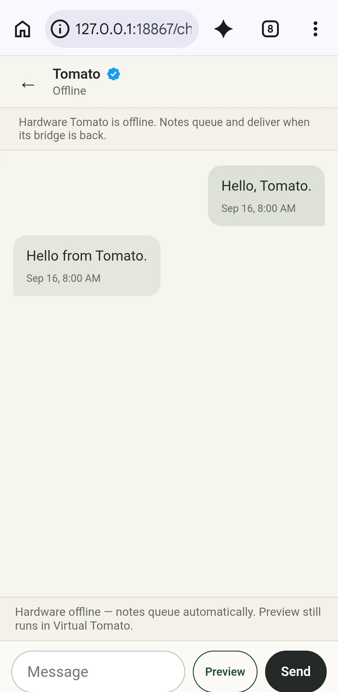
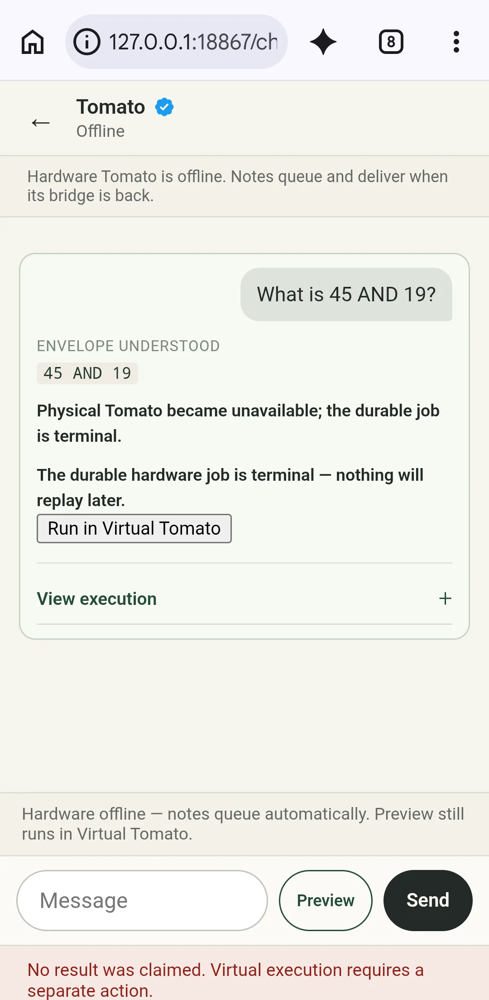

“Implemented” means present in current source. It does not mean the checked revision is deployed, a bridge is online, or programmed hardware has passed a current acceptance run.
Implemented
Web chat
Browser chat, mobile two-pane navigation, unread state, typing feedback, queued messaging, controlled-language compute, and explicit result provenance are present in repository source. The deployed public revision must be checked separately.
Implemented + unit-tested
Virtual Tomato
Offline compute can run immediately in the browser. After a hardware attempt, virtual fallback requires a separate action and a confirmed terminal non-result. Ambiguous hardware work is never replayed automatically, and virtual work is never queued for later physical execution.

Staged UI evidence: hardware offline and a note queued for a later verified bridge. No message was sent.

Staged terminal outcome: no automatic replay; virtual execution remains a separate action.Source-supported
Bridge and protocol
macOS 14 and the private Android 0.2.0 app implement the bridge. Binary protocol version 1 has shared codec vectors. Codec agreement does not prove a live radio session.
Implemented
Tomato endpoint
Envelop in Tomato OS and hardware messaging/compute paths exist in current source and local tests. Availability and matching backend, bridge, firmware, and FPGA revisions require a live acceptance check.
Needs later evidence
Not claimed here
The exact website and backend revisions currently deployed.
A nearby verified bridge and programmed FPGA currently online with matching revisions.
Completion of the latest private Android physical-device acceptance sequence.
A rehearsed production backup and owner-recovery procedure.
Runtime availability can change moment to moment. The chat’s online indicator reports an unexpired authenticated bridge lease after the exact ENVELOP/1 identity response; it is not a permanent product-status claim.